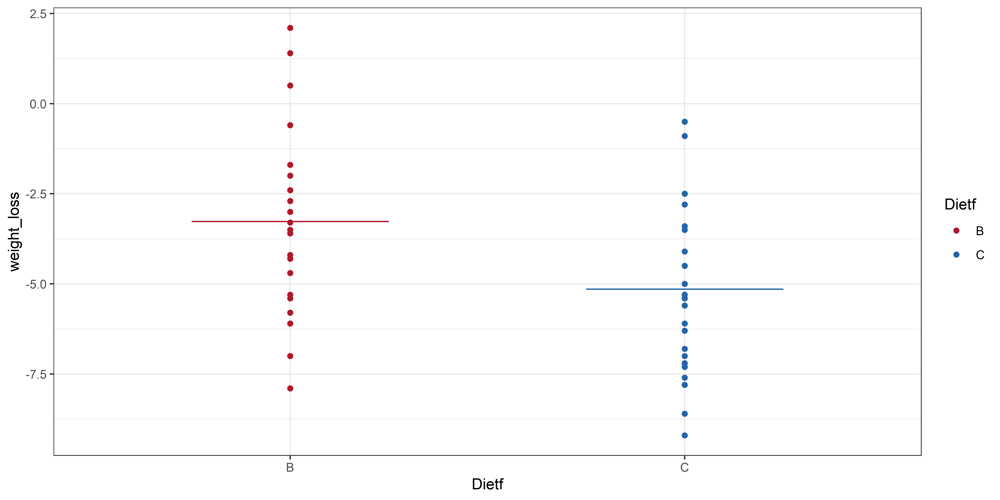
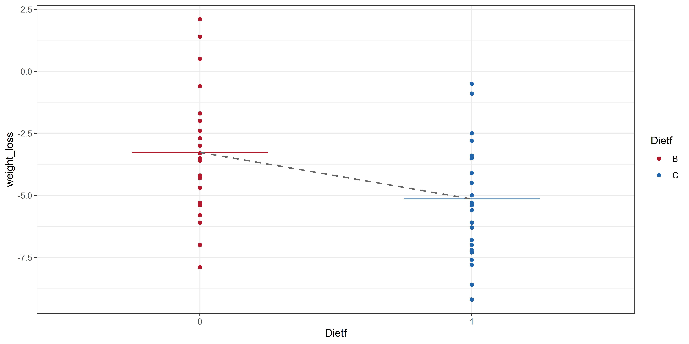
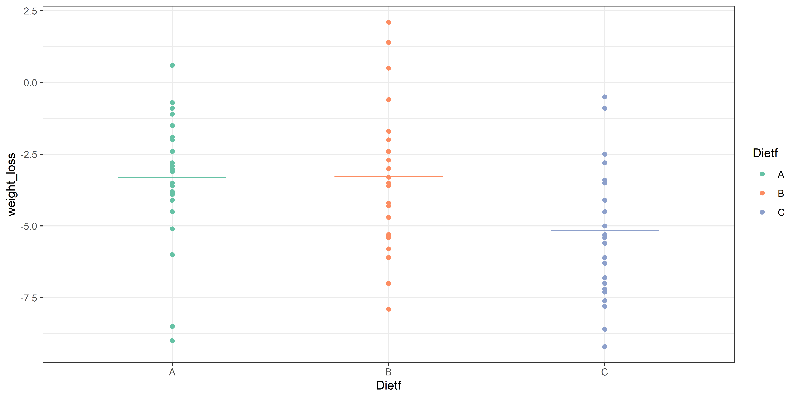
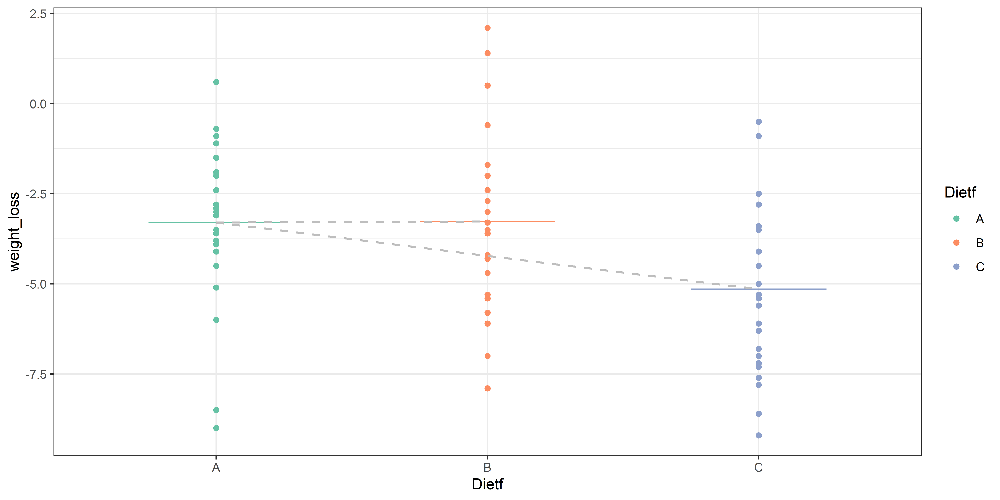
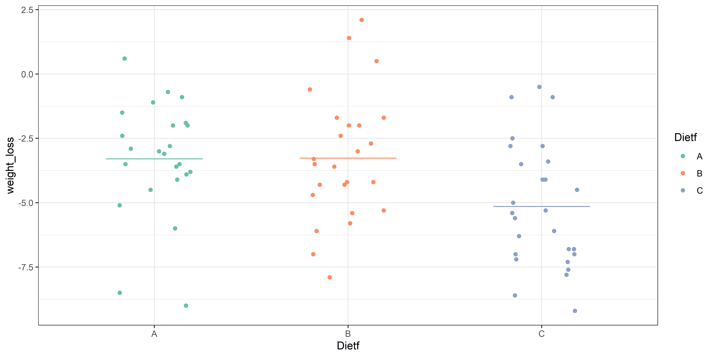
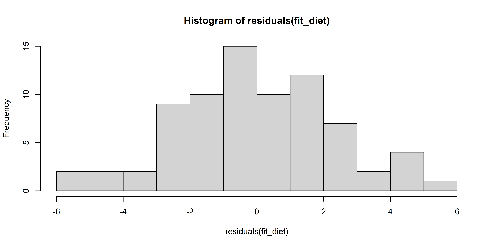
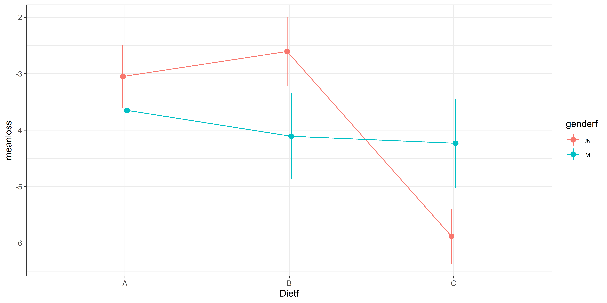

library(tidyverse)
diet <- readr::read_csv("https://raw.githubusercontent.com/Pozdniakov/tidy_stats/master/data/stcp-Rdataset-Diet.csv")
diet <- diet %>%
mutate(weight_loss = weight6weeks - pre.weight,
Dietf = factor(Diet, labels = LETTERS[1:3]), # перекодирование в фактор
Person = factor(Person)) %>%
drop_na()Язык программирования R для анализа данных: лекция 11
Двухфакторный дисперсионный анализ
Elena U
Вспомним, что было в предыдущих сериях…
Однофакторный дисперсионный анализ
Простая линейная регрессия
Множественная линейная регрессия
Ограничения линейной регрессии
Tip
Дисперсионный анализ объясняют после линейной регрессии не просто так…
План лекции
t-test и ANOVA как частные случаи линейной регрессии
Ограничения ANOVA
Непараметрические аналоги ANOVA + post hoc тесты
Двухфакторная ANOVA
t-test и ANOVA как обобщения линейной регрессии
Данные для работы
Данные об эффективности диет.
Обратите внимание на перекодирование типа диеты в фактор:
[1] A A A A A A A A A A A A A A B B B B B B B B B B B B B B C C C C C C C C C C
[39] C C C C C A A A A A A A A A A B B B B B B B B B B B C C C C C C C C C C C C
Levels: A B CФактор - проименованный вектор в R. По умолчанию уровни заданы в алфавитном порядке.
t-test как общий случай линейной регрессии
Обычно мы рассматриваем t-test как метод сравнения средних, но давайте теперь представим, что у нас линейная регрессия, где независимая переменная - тип диеты, зависимая - потеря веса.
t-test как общий случай линейной регрессии
t-test как общий случай линейной регрессии
Независимую переменную можно перекодировать в 0 и 1: допустим диета B станет 0, а диета C – 1. Запускаем линейную регрессию lm():
Call:
lm(formula = weight_loss ~ Dietf, data = diet23)
Coefficients:
(Intercept) DietfC
-3.268 -1.880 Intercept – среднее для диеты 0 (то есть B), а коэффициент наклона DietfC – разница между средним диеты C и диеты B.
t-test как общий случай линейной регрессии: проверка
Two Sample t-test
data: weight_loss by Dietf
t = 2.7889, df = 50, p-value = 0.007463
alternative hypothesis: true difference in means between group B and group C is not equal to 0
95 percent confidence interval:
0.5260598 3.2342365
sample estimates:
mean in group B mean in group C
-3.268000 -5.148148
Call:
lm(formula = weight_loss ~ Dietf, data = diet23)
Residuals:
Min 1Q Median 3Q Max
-4.6320 -1.8519 -0.2419 1.5680 5.3680
Coefficients:
Estimate Std. Error t value Pr(>|t|)
(Intercept) -3.2680 0.4858 -6.727 1.6e-08 ***
DietfC -1.8801 0.6742 -2.789 0.00746 **
---
Signif. codes: 0 '***' 0.001 '**' 0.01 '*' 0.05 '.' 0.1 ' ' 1
Residual standard error: 2.429 on 50 degrees of freedom
Multiple R-squared: 0.1346, Adjusted R-squared: 0.1173
F-statistic: 7.778 on 1 and 50 DF, p-value: 0.007463Обратите внимание! Я выставила var.equal = TRUE, чтобы посчитался обычный t-test, без поправки Велча. С поправкой p-value будет отличаться на 0.0001.
Расчет p-value коэффициента slope
\[ t = \frac{slope}{SE(slope)} \]
\[ SE(slope) = \frac{\sqrt{\frac{{\sum{(y_i-\hat{y_i})^2}}}{n-2}}}{\sqrt{\sum{(x_i - \overline{x})^2}}} \]
Подведем итоги:
Мы рассмотрели t-test с точки зрения линейной регрессии:
- Независимая переменная – номинативная с двумя уровнями, зависимая – количественная.
- Задали диету B в качестве нулевого уровня (среднее диеты стало Intercept-ом модели).
- Разница между средними описывается коэффициентом наклона регрессионной прямой.
- Расчет значимости коэффициента наклона совпадает в точности с расчетом t-test без поправки Велча.
t-test можно рассмотреть также как частный случай дисперсионного анализа, где независимая переменная имеет всего 2 уровня.
Df Sum Sq Mean Sq F value Pr(>F)
Dietf 1 45.89 45.89 7.778 0.00746 **
Residuals 50 294.98 5.90
---
Signif. codes: 0 '***' 0.001 '**' 0.01 '*' 0.05 '.' 0.1 ' ' 1p-value совпадают при расчете всеми тремя методами
ANOVA как общий случай линейной регрессии
Дисперсионный анализ также можно посчитать с помощью функции lm() как для линейной регрессии. Однако у нас теперь три уровня фактора, мы их не можем закодировать как 0, 1, 2.
Call:
lm(formula = weight_loss ~ Dietf, data = diet)
Residuals:
Min 1Q Median 3Q Max
-5.7000 -1.6519 -0.1759 1.4420 5.3680
Coefficients:
Estimate Std. Error t value Pr(>|t|)
(Intercept) -3.3000 0.4840 -6.818 2.26e-09 ***
DietfB 0.0320 0.6776 0.047 0.96246
DietfC -1.8481 0.6652 -2.778 0.00694 **
---
Signif. codes: 0 '***' 0.001 '**' 0.01 '*' 0.05 '.' 0.1 ' ' 1
Residual standard error: 2.371 on 73 degrees of freedom
Multiple R-squared: 0.1285, Adjusted R-squared: 0.1047
F-statistic: 5.383 on 2 and 73 DF, p-value: 0.006596Dummy coding
Допустим, у нас есть столбец с фактором, у которого 3 уровня.
Можно ли его использовать в качестве бинарного предиктора для регрессии?
Создаем дополнительные переменные, заполненные нулями и единицами, соответственно фактору.
| factor | A | B | C |
|---|---|---|---|
| A | 1 | 0 | 0 |
| A | 1 | 0 | 0 |
| B | 0 | 1 | 0 |
| B | 0 | 1 | 0 |
| C | 0 | 0 | 1 |
| C | 0 | 0 | 1 |
Если нам известно 2 столбца, то мы можем однозначно вывести третий.
Dummy coding
Один из уровней фактора (обычно первый) берется за дефолтный, поскольку на основании оставшихся двух столбцов можно однозначно вывести столбец А.
| B | C |
|---|---|
| 0 | 0 |
| 0 | 0 |
| 1 | 0 |
| 1 | 0 |
| 0 | 1 |
| 0 | 1 |
Фактор - проименованный вектор в R. По умолчанию уровни заданы в алфавитном порядке.
ANOVA как общий случай линейной регрессии: графически
ANOVA как общий случай линейной регрессии: графически
Интерпретация дисперсионного анализа в виде регрессии
Call:
lm(formula = weight_loss ~ Dietf, data = diet)
Residuals:
Min 1Q Median 3Q Max
-5.7000 -1.6519 -0.1759 1.4420 5.3680
Coefficients:
Estimate Std. Error t value Pr(>|t|)
(Intercept) -3.3000 0.4840 -6.818 2.26e-09 ***
DietfB 0.0320 0.6776 0.047 0.96246
DietfC -1.8481 0.6652 -2.778 0.00694 **
---
Signif. codes: 0 '***' 0.001 '**' 0.01 '*' 0.05 '.' 0.1 ' ' 1
Residual standard error: 2.371 on 73 degrees of freedom
Multiple R-squared: 0.1285, Adjusted R-squared: 0.1047
F-statistic: 5.383 on 2 and 73 DF, p-value: 0.006596F-значения и p-value совпадают, так и должно быть
Общая линейная модель (general linear model)
\[ Y = XB + U, \]
где \(Y\) - матрица зависимых переменных, \(X\) - матрица независимых переменных, \(B\) - матрица оцененных параметров, \(U\) - матрица ошибок (остатков).
Почти все пройденные нами методы можно рассматривать как частный случай общей линейной модели: t-тесты, коэффициент корреляции Пирсона, линейная регрессия, ANOVA.

Картинка побольше здесь.
Обобщенная линейная модель (generalized linear model, GLM)
Обобщенная линейная модель была придумана как обобщение линейной регрессии и ее сородичей: логистической регрессии и пуассоновской регрессии.
Обобщенную линейную модель можно использовать, когда распределение ошибок отличается от нормального.
Ограничения ANOVA
Ограничения ANOVA
Независимость наблюдений.
Нормальность распределения исходных данных - под вопросом (тоже самое, что и про t-test).
Равенство дисперсий исходных данных - необязательно, если дизайн сбалансированный.
Нормальность распределения остатков - очень важно.
Равенство дисперсии распределения остатков
Независимость наблюдений
Актуальны все те же правила, что были для линейной регрессии и т-теста.
Отсутствие псевдоповторностей
Отсутствие временных и пространственных автокорреляций
Что такое остатки в ANOVA?
Дисперсионный анализ можно воспринимать как частный случай линейной модели, когда зависимая переменная количественная, а независимая номинативная.
Проверка на нормальность распределения остатков
Распределение похоже на нормальное.
Гомогенность дисперсий остатков
- остатки в группах по фактору
- остатки в зависимости от предсказанных значений
Непараметрический аналог дисперсионного анализа: тест Краскелла-Уоллиса (Kruskal-Wallis)
В случае, если допущения ANOVA слишком сильно нарушаются, можно использовать непараметрический аналог: H-критерий Краскелла-Уоллиса.
Представляет собой расширение критерия Манна-Уитни для нескольких групп, вместо оригинальных значений используются ранги. Рассчитывается H-значение, которое сравнивается с распределением \(\chi^2\), где количество степеней свободы=количество групп-1
Как и обычная анова дает ответ на вопрос, есть ли хоть одно различие между группами, но для сравнения групп нужно использовать post-hoc тесты.
Тест Краскелла-Уоллиса в R
Функция kruskal.test() есть в базовом R.
Непараметрические post-hoc тесты
Для обычной ановы используем Тьюки, но в случае нарушения предположений ановы, нарушается и предположения Тьюки, следовательно, для сравнения групп нужно использовать другие тесты.
Непараметрические аналоги Тьюки: тест Даннета (Dunnet), тест Данна (Dunn).
Warning
Без шуток, это разные тесты!
Тест Данна делает попарные сравнения каждой группы с каждой.
Kruskal-Wallis rank sum test
data: x and group
Kruskal-Wallis chi-squared = 9.4159, df = 2, p-value = 0.01
Comparison of x by group
(Holm)
Col Mean-|
Row Mean | A B
---------+----------------------
B | 0.376851
| 0.3531
|
C | 2.797580 2.439670
| 0.0077* 0.0147*
alpha = 0.05
Reject Ho if p <= alpha/2Тест Даннета
Делает сравнение групп с контролем
Dunnett's test for comparing several treatments with a control :
95% family-wise confidence level
$A
diff lwr.ci upr.ci pval
B-A 0.032000 -1.494803 1.5588028 0.9983
C-A -1.848148 -3.346998 -0.3492983 0.0131 *
---
Signif. codes: 0 '***' 0.001 '**' 0.01 '*' 0.05 '.' 0.1 ' ' 1Вместо постхоков можно использовать тесты Манна-Уитни с поправкой на множественное тестирование
Двухфакторный дисперсионный анализ
Двухфакторный дисперсионный анализ
Влияние единственного фактора редко когда интересует исследователя. Гораздо чаще нас интересует влияние нескольких факторов, и особенно их возможное взаимодействие.
Допустим, мы хотим сравнить эффективность различных диет в зависимости от пола испытуемого. Следовательно, у нас две независимые переменные: тип диеты (3 уровня фактора) и пол (2 уровня фактора). Часто обозначают как “3x2 ANOVA”.
Мы можем оценить влияние каждого фактора по отдельности, и, самое интересное, – их возможное взаимодействие.
Что такое взаимодействие факторов?
Взаимодействие факторов – когда эффект фактора A разный в зависимости от фактора B и наоборот. На каких рисунках есть взаимодействие факторов?

Logan, 2010, fig.12.2
Взаимодействие факторов может маскировать главные эффекты

Если есть значимое взаимодействие, то
главные эффекты обсуждать не имеет смысла
пост хок тесты проводятся только для ваимодействия
Двухфакторный дисперсионный анализ
Взаимодействие видно на графике с линиями: если линии параллельны, то взаимодействия нет.
Важность сбалансированности данных
Если данные сбалансированы (размеры групп примерно одинаковы), то
взаимодействие и эффекты факторов независимы (в любой параметризации),
все суммы квадратов и соответствующие тесты можно посчитать в одном анализе,
результат не зависит от порядка включения факторов в модель.
Если данные несбалансированы, то
суммы квадратов для факторов не равны общей сумме квадратов,
для вычислений используется регрессионный подход (несколько сравнений вложенных моделей),
результат анализа может зависеть от порядка включения факторов в модель.
Подводные камни (pitfalls) двухфакторной ановы
Функция aov() в базовом R по умолчанию считает сумму квадратов первого типа, которую не рекомендуют использовать (!).
Формулы расчета сумм квадратов
| I тип | II тип | III тип | |
|---|---|---|---|
| Название | Последовательный | Без учета взаимодействий высоких порядков | Иерархический |
| Порядок расчета SS | SS(A) SS(B|A) SS(AB|B, A) |
SS(A|B) SS(B|A) SS(AB|B, A) |
SS(A|B, AB) SS(B|A, AB) SS(AB|B, A) |
| Величина эффекта зависит от выборки в группе | Да | Да | Нет |
Рекомендуется использовать car или ezANOVA
| I тип | II тип | III тип | |
|---|---|---|---|
| Результат зависит от порядка включения факторов в модель | Да | Нет | Нет |
| Запуск в R | aov() |
ez::ezANOVA(), car::Anova() |
ez::ezANOVA(), car::Anova() |
Запуск двухфакторной ановы в R
library(ez)
ezANOVA(data = diet,
dv = weight_loss,
wid = Person,
between = .(Dietf, gender),
detailed = T,
return_aov = T)$ANOVA
Effect DFn DFd SSn SSd F p p<.05
1 Dietf 2 70 60.4172197 376.329 5.61902602 0.00545568 *
2 gender 1 70 0.1686958 376.329 0.03137868 0.85990976
3 Dietf:gender 2 70 33.9040683 376.329 3.15320438 0.04884228 *
ges
1 0.138334829
2 0.000448066
3 0.082645860
$aov
Call:
aov(formula = formula(aov_formula), data = data)
Terms:
Dietf gender Dietf:gender Residuals
Sum of Squares 60.5270 0.1687 33.9041 376.3290
Deg. of Freedom 2 1 2 70
Residual standard error: 2.318648
Estimated effects may be unbalancedВзаимодействие оказалось значимым
Спасибо за внимание!
Если понравилось, переходите по ссылке: